About NbS
自然解方：三種展示模板
自然解方（NbS）是透過保護、永續管理、恢復自然，或改變生態系的方式，有效且因地制宜地回應社會挑戰，同時創造人類福祉與生物多樣性效益的規劃取徑。NbS 展示模板的目的是對外展示，以便有效率地說明何謂 NbS，並呈現專案與 IUCN NbS 標準的呼應——這是我在這個計畫中設計的三份模板，後來也成為工具箱裡「自然解方簡表(一)(二)(三)」的原型。
自然解方簡表(一)
NbS Profile I用於簡介應用之 NbS 如何「藉由保護、永續管理、恢復自然以及改變生態系解決社會挑戰、提供人類福祉與生物多樣性裨益」。
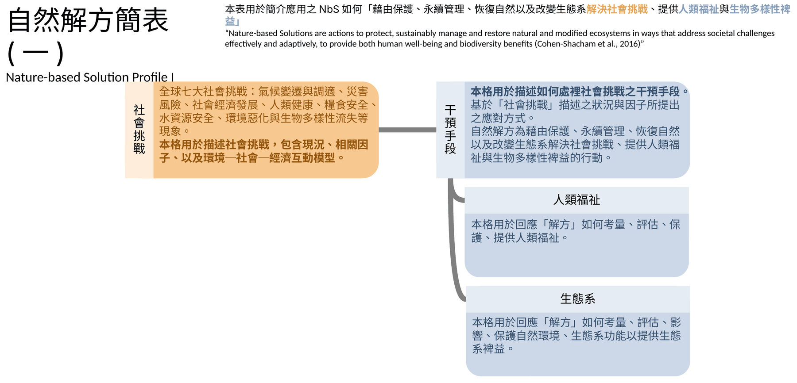
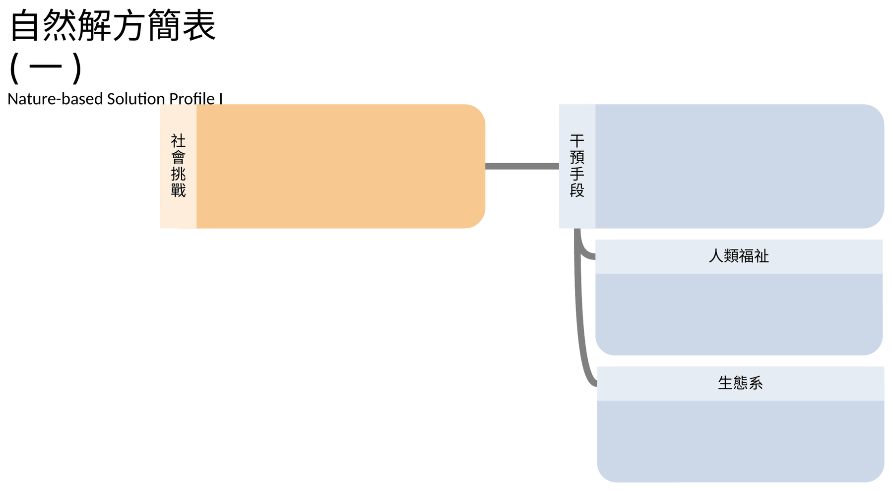
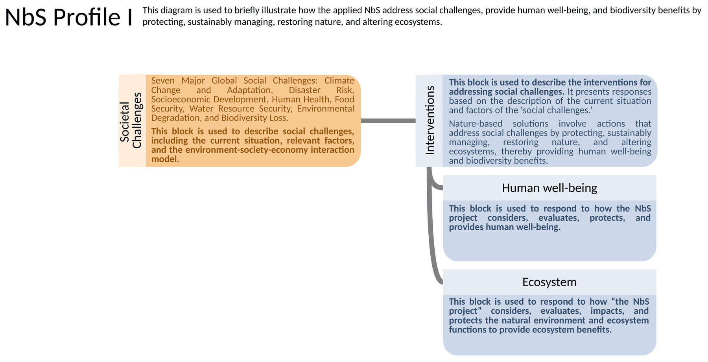
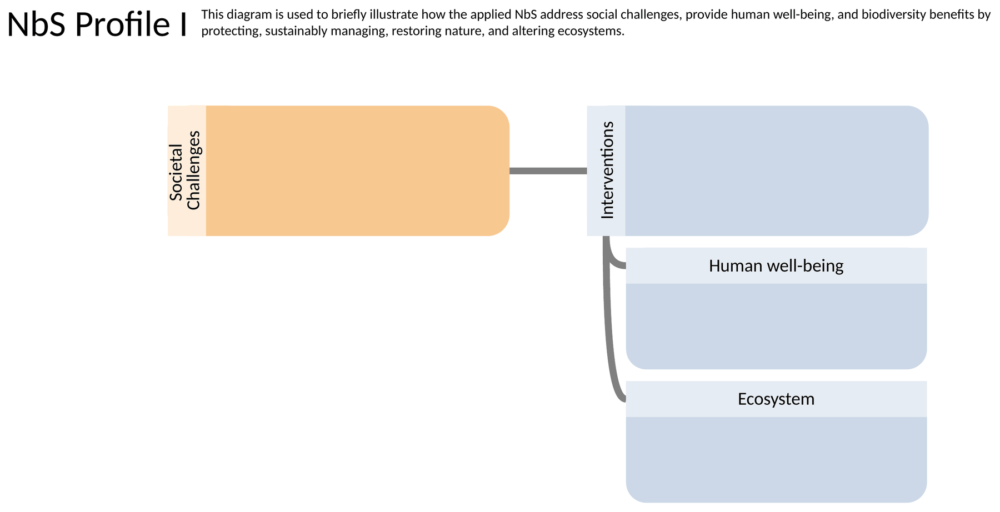
自然解方簡表(二)
NbS Profile II涵蓋了自然解方規劃與執行的關鍵元素，呼應 IUCN 的 NbS 評估標準。本模板由規劃者角度設計，以利發想與設計 NbS、盤點考量事項，以及對外介紹。考量工具箱使用者——水文／水利專家——熟悉水文／水理模式，特將部分格子與模擬模式類比。
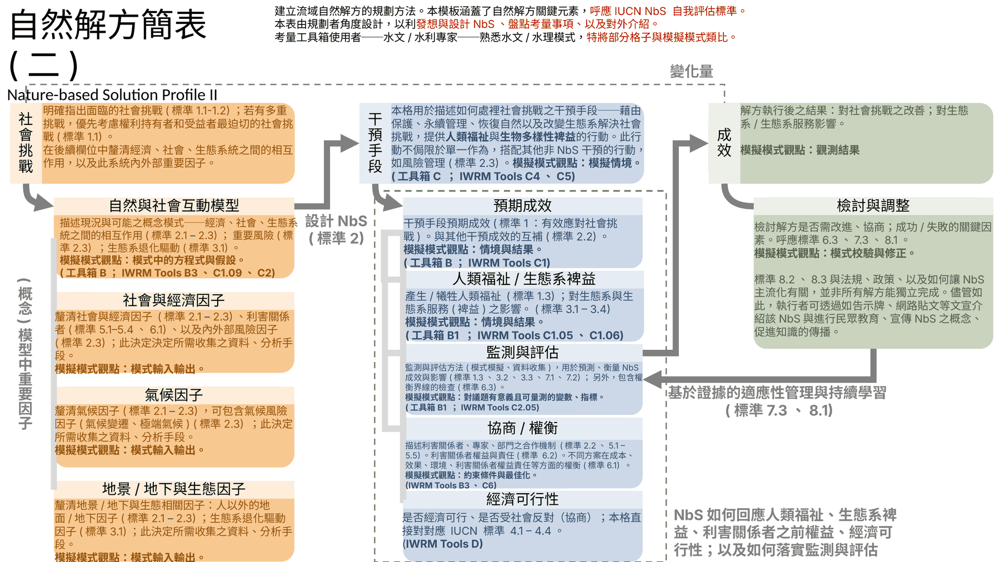
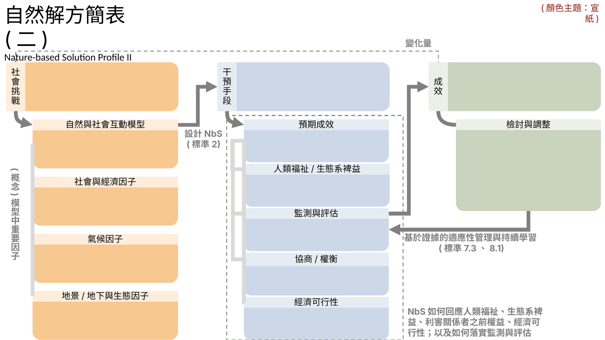
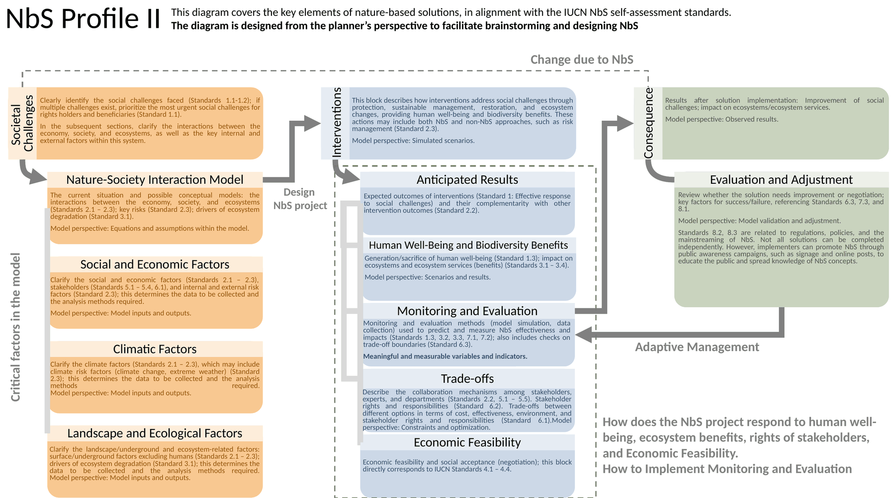
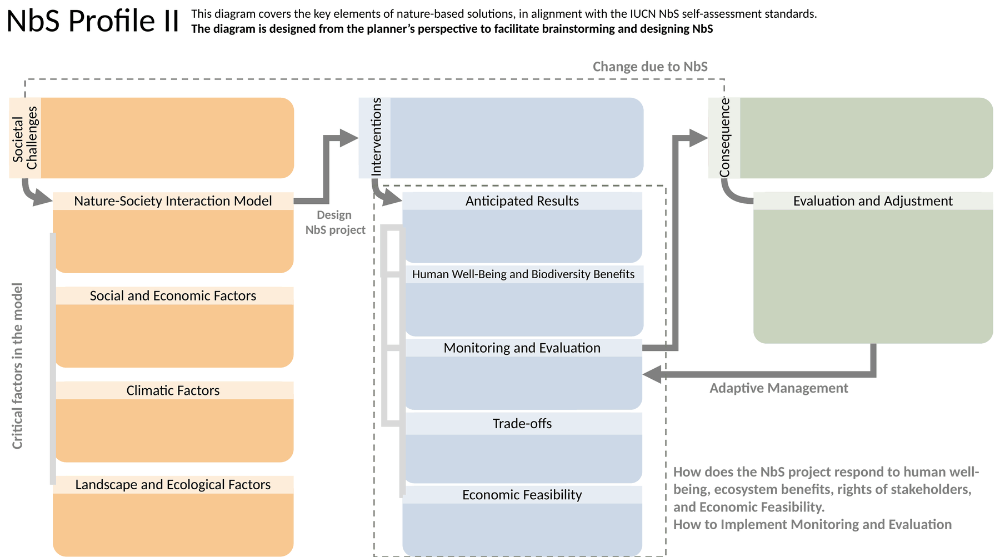
自然解方簡表(三)
NbS Profile III僅用於對一般民眾介紹 NbS 施作成果。
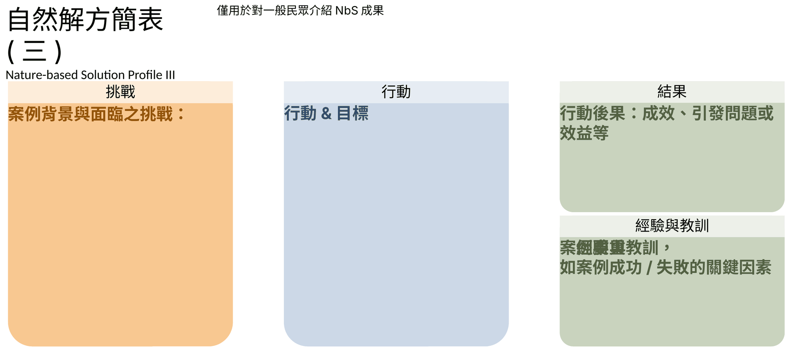
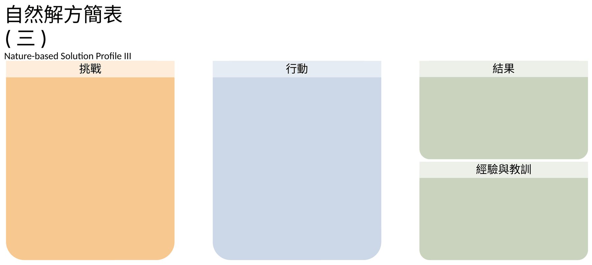
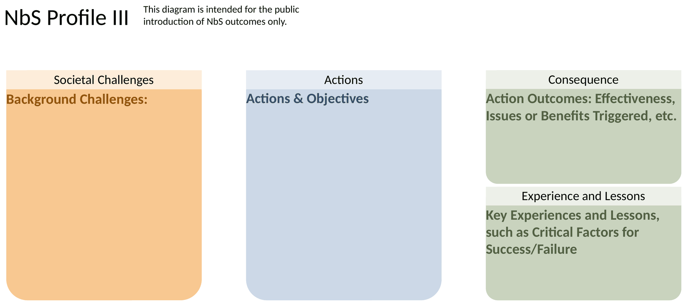